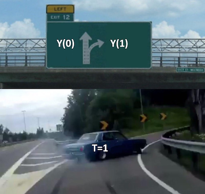
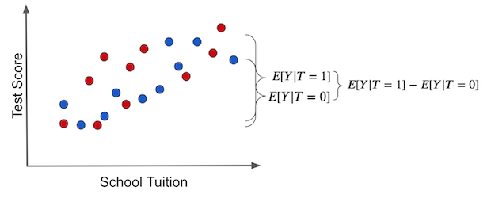

import pandas as pd
import numpy as np
from scipy.special import expit
import seaborn as sns
from matplotlib import pyplot as plt
from matplotlib import style
style.use("fivethirtyeight")
np.random.seed(123)
n = 100
tuition = np.random.normal(1000, 300, n).round()
tablet = np.random.binomial(1, expit((tuition - tuition.mean()) / tuition.std())).astype(bool)
enem_score = np.random.normal(200 - 50 * tablet + 0.7 * tuition, 200)
enem_score = (enem_score - enem_score.min()) / enem_score.max()
enem_score *= 1000
data = pd.DataFrame(dict(enem_score=enem_score, Tuition=tuition, Tablet=tablet))第一章：因果关系入门
为什么需要关心因果关系？
首先，您可能想知道：它对我有什么好处？下面的文字就将围绕“它”展开：
数据科学不再是过去所认为的样子（或最终应该呈现的样子）
数据科学家被哈佛商业评论评为 21世纪最有吸引力的工作。这不是空话。十年来，数据科学家一直是人们关注的焦点。人工智能专家的薪水可与体育巨星相媲美。在追求名利的过程中，成千上万的年轻专业人士开始了一场看似疯狂的淘金热，以尽快获得数据科学的头衔。整个新行业都围绕着炒作而兴起。神奇的教学方法可以让你成为数据科学家，而无需你看一个数学公式。如果您的公司能够释放数据的潜力，咨询专家承诺将投入数百万美元。人工智能或机器学习，被称为新电力，而数据，则被成为新石油。
与此同时，我们有点忘记了那些一直在用数据做“老式”科学的人。在这段时间里，经济学家试图回答教育对一个人收入的真正影响是什么，生物统计学家试图了解饱和脂肪是否会导致更高的心脏病发作几率，心理学家试图了解肯定的话是否真的会导致心脏病发作。婚姻更幸福。老实说，数据科学家并不是一个新兴领域。由于媒体提供了大量的免费营销，我们刚刚才意识到这一点。
使用Jim Collins的比喻，想想给自己倒一杯你最喜欢的冰镇啤酒。如果您以正确的方式执行此操作，杯子里大部分将是啤酒，但顶部会有一指厚的泡沫层。这个杯子装的就像数据科学。
- 它可以是啤酒。 统计基础，科学好奇心，对难题的热情。 数百年来，所有这些都被证明非常有价值。
- 它也可以是泡沫。 建立在不切实际的期望之上的那些蓬松东西最终会消失。
这种泡沫可能以比你想象中更快的速度掉下来。 正如《经济学人》所说：
那些预测人工智能将产生改变世界影响的顾问还报告说，真正公司的真正管理者发现人工智能很难实施，而且对它的热情正在降温。 研究公司 Gartner 的 Svetlana Sicular 表示，2020 年可能是人工智能跌入其公司广为人知的“炒作周期”下坡的一年。 投资者开始意识到赶潮流：风险投资基金 MMC 对欧洲人工智能初创公司的一项调查发现，40% 的人似乎根本没有使用任何人工智能。
在所有这些热潮中，作为数据科学家——或者更确切的说，作为“纯粹”的科学家——我们应该做什么？ 作为初学者，如果您很聪明，您将学会忽略泡沫。 我们是为了啤酒。 数学和统计学一直很有用，现在不太可能停止。 其次，学习是什么让你的工作有价值和有用，而不是没有人想出如何使用的最新闪亮工具。
最后，但同样重要的，是请记住没有捷径可走。 数学和统计学知识之所以有价值，正是因为它们很难获得。 如果每个人都能做到，供应过剩就会压低价格。 所以振奋起来！ 尽可能地学习它们。 哎呀，为什么不呢？ 一路上玩得开心，因为我们只为勇敢而真实的人开始这个任务。
回答不同类型的问题
机器学习目前非常擅长回答的问题类型是预测类型。正如 Ajay Agrawal、Joshua Gans 和 Avi Goldfarb 在《预测机器》一书中所说，“人工智能的新浪潮实际上并没有给我们带来智能，而是智能的一个关键组成部分——预测”。我们可以用机器学习做各种美妙的事情。唯一的要求是我们将问题构建为预测问题。想从英语翻译成葡萄牙语？然后构建一个 ML 模型，在给定英语句子时预测葡萄牙语句子。想识别人脸？然后构建一个 ML 模型，该模型预测图片子部分中是否存在人脸。想造一辆自动驾驶汽车吗？然后构建一个 ML 模型来预测车轮的方向以及当呈现来自汽车周围的图像和传感器时的刹车和油门压力。
然而，ML 并不是万能的。它可以在非常严格的边界下创造奇迹，但如果它使用的数据与模型习惯的数据略有不同，它仍然会失败。再举一个来自 Prediction Machines 的例子，“在许多行业中，低价格与低销量有关。比如在酒店行业，旅游旺季外价格低，需求旺盛、酒店爆满时价格高。鉴于这些数据，一个幼稚的预测可能表明提高价格会导致售出更多房间。”
ML 在这种逆因果关系类型的问题上是出了名的糟糕。这类问题要求我们回答“假设发生”这样的问题，经济学家称之为反事实。假设我目前要求的商品不是这个价格，而是使用另一个价格，会发生什么情况？假设我不采用这种低脂饮食，而是采用低糖饮食，会发生什么？假设您在银行工作，提供信贷，您将必须弄清楚更改客户线会如何改变您的收入。或者，假设您在当地政府工作，您可能会被要求弄清楚如何改善学校教育系统。您是否应该因为数字知识时代告诉您而将平板电脑送给每个孩子？或者你应该建造一个老式的图书馆？
这些问题的核心是我们希望知道答案的因果调查。因果问题渗透到日常问题中，例如弄清楚如何提高销售额，但它们也在我们非常个人和宝贵的困境中发挥重要作用：我是否必须上一所昂贵的学校才能在生活中取得成功（是吗？教育导致收入）？移民是否会降低我找到工作的机会（移民是否会导致失业率上升）？向穷人汇款会降低犯罪率吗？不管你在哪个领域，很可能你已经或将不得不回答某种类型的因果问题。不幸的是，对于 ML，我们不能依靠相关类型预测来解决它们。
回答这类问题比大多数人想象的要困难。您的父母可能已经向您反复说过“关联不是因果关系”，但实际上要解释为什么会这样却是有点困难的。这也是因果关系入门这一章要讲的。至于本书的其余部分，它将致力于弄清楚如何使关联成为因果关系。
当关联确实是因果时
直觉上，我们模糊地知道为什么关联不是因果关系。 如果有人告诉您，为学生提供平板电脑的学校比不提供平板电脑的学校表现更好，您可以很快指出，那些配备平板电脑的学校可能更富有。 因此，即使没有平板电脑，他们的表现也会比平均水平更好。 因此，我们不能得出结论说，在课堂上给孩子们使用平板电脑会提高他们的学习成绩。 我们只能说学校的平板电脑与学习成绩表现好有关。
plt.figure(figsize=(6,8))
sns.boxplot(y="enem_score", x="Tablet", data=data).set_title('ENEM score by Tablet in Class')
plt.show()
为了超越简单的直觉，让我们首先建立一些符号。 这将是我们谈论因果关系的共同语言。 把它想象成我们将用来识别其他勇敢和真正的因果战士的通用语言，它将在未来的许多战斗中组成我们的呼声。
用 \(T_i\) 表达单元i的干预介入量（treatment intake）.
\[ T_i=\begin{cases} 1 \ \text{if unit i received the treatment}\\ 0 \ \text{otherwise}\\ \end{cases} \]
这里的干预不需要是药物或医学领域的任何东西。 相反，它只是一个术语，我们将用它来表示一些我们想知道其效果的干预。 在我们的案例中，治疗是给学生服用药片。 作为旁注，您有时可能会看到 \(D\) 而不是 \(T\) 来表示处理。
现在，让我们将 \(Y_i\) 称为单元 i 的观察结果变量。
结果是我们感兴趣的变量。 我们想知道干预是否有任何影响。 在我们的平板电脑示例中，它将是学习成绩。
这就是事情变得有趣的地方。 因果推断的基本问题是我们永远无法在经过处理和未经处理的情况下观察到同一个单元。 就好像我们有两条不同的道路，我们只能知道我们走的那条路前面有什么。 正如Robert Frost的诗：
两条路在黄树林中分岔，
很抱歉我不能同时走过这两条路
作为一名独行者，我驻足许久
尽我所能地往前看
直到在灌木旁蜿蜒消失；
为了解决这个问题，我们将在潜在结果方面进行很多讨论。它们被成为潜在的结果是因为它们实际上并没有发生。相反，它们表示在采取某些干预的情况下会发生什么。我们有时将发生的潜在结果称为事实，而将未发生的潜在结果称为反事实。
至于符号，我们使用了一个额外的下标：
\(Y_{0i}\) 是未经处理的单元 i 的潜在结果。
\(Y_{1i}\) 是相同单元 i 的潜在结果。
有时您可能会看到表示为函数 \(Y_i(t)\) 的潜在结果，所以要小心。 \(Y_{0i}\) 可以是 \(Y_i(0)\) 而 \(Y_{1i}\) 可以是 \(Y_i(1)\)。在这里，我们大部分时间将使用下标符号。

回到我们的例子，\(Y_{1i}\) 是学生 i 如果他或她在带平板电脑的教室里的学习成绩。不管是不是这样，对于\(Y_{1i}\)都没有关系。不管怎样都是一样的。如果学生 i 拿到平板电脑，我们可以观察到 \(Y_{1i}\)。如果没有，我们可以观察到\(Y_{0i}\)。注意在最后一种情况下，\(Y_{1i}\) 仍然是定义的，我们只是看不到它。在这种情况下，这是一个反事实的潜在结果。
有了潜在的结果，我们可以定义个体治疗效果：
\(Y_{1i} - Y_{0i}\)
当然，由于因果推断的根本问题，我们永远无法知道个体的治疗效果，因为我们只观察了其中一种潜在结果。目前，让我们关注一些比估计个体治疗效果更容易的事情。相反，让我们关注平均处理效果，其定义如下。
\(ATE = E[Y_1 - Y_0]\)
其中，E[...] 是期望值。另一个更容易估计的数量是对被干预者的平均干预效果：
\(ATT = E[Y_1 - Y_0 | T=1]\)
现在，我知道我们不能看到两种潜在的结果，但为了争论，我们假设我们可以。假设因果推理之神对我们进行的许多统计斗争感到满意，并以上帝般的力量奖励我们，以查看替代的潜在结果。有了这种能力，假设我们收集了 4 所学校的数据。我们知道他们是否向学生提供平板电脑以及他们在某些年度学术测试中的分数。在这里，平板电脑是治疗方法，所以 \(T=1\) 如果学校向孩子们提供平板电脑。 \(Y\) 将是测试分数。
pd.DataFrame(dict(
i= [1,2,3,4],
y0=[500,600,800,700],
y1=[450,600,600,750],
t= [0,0,1,1],
y= [500,600,600,750],
te=[-50,0,-200,50],
))| i | y0 | y1 | t | y | te | |
|---|---|---|---|---|---|---|
| 0 | 1 | 500 | 450 | 0 | 500 | -50 |
| 1 | 2 | 600 | 600 | 0 | 600 | 0 |
| 2 | 3 | 800 | 600 | 1 | 600 | -200 |
| 3 | 4 | 700 | 750 | 1 | 750 | 50 |
这里的 \(ATE\) 将是最后一列的平均值，即治疗效果的平均值：
\(ATE=(-50 + 0 - 200 + 50)/4 = -50\)
这意味着平板电脑会使学生的学习成绩平均降低 50 分。 当 \(T=1\) 时，这里的 \(ATT\) 将是最后一列的平均值：
\(ATT=(- 200 + 50)/2 = -75\)
也就是说，对于接受治疗的学校，平板电脑使学生的学习成绩平均降低了 75 分。 当然，我们永远无法知道这一点。 实际上，上表如下所示：
pd.DataFrame(dict(
i= [1,2,3,4],
y0=[500,600,np.nan,np.nan],
y1=[np.nan,np.nan,600,750],
t= [0,0,1,1],
y= [500,600,600,750],
te=[np.nan,np.nan,np.nan,np.nan],
))| i | y0 | y1 | t | y | te | |
|---|---|---|---|---|---|---|
| 0 | 1 | 500.0 | NaN | 0 | 500 | NaN |
| 1 | 2 | 600.0 | NaN | 0 | 600 | NaN |
| 2 | 3 | NaN | 600.0 | 1 | 600 | NaN |
| 3 | 4 | NaN | 750.0 | 1 | 750 | NaN |
您可能会说，这肯定不理想，但我不能仍然采用处理过的平均值并将其与未处理过的平均值进行比较吗？ 换句话说，我不能只做 \(ATE=(600+750)/2 - (500 + 600)/2 = 125\) 吗？ 嗯，不！ 注意结果的不同。 那是因为你刚刚犯了将联想误认为因果关系的最严重的罪过。 要了解原因，让我们来看看因果推理的主要敌人。
偏差
偏差是使关联不同于因果关系的原因。幸运的是，我们的直觉很容易理解。让我们在课堂示例中回顾一下我们的平板电脑。当面对声称为孩子提供平板电脑的学校会获得更高考试成绩的说法时，我们可以反驳说，即使没有平板电脑，这些学校也可能会获得更高的考试成绩。那是因为他们可能比其他学校有更多的钱；因此，他们可以支付更好的教师，负担更好的教室，等等。换句话说，经过处理的学校（使用平板电脑）与未经处理的学校没有可比性。
用潜在结果符号表示这一点就是说 \(Y_0\) 处理的 \(Y_0\) 与未处理的 \(Y_0\) 不同。请记住，处理过的 ** 的 \(Y_0\) 是反事实的**。我们无法观察它，但我们可以推理它。在这种特殊情况下，我们甚至可以利用我们对世界如何运作的理解走得更远。我们可以说，接受处理的学校的 \(Y_0\) 可能大于未处理学校的 \(Y_0\)。这是因为有能力为孩子提供平板电脑的学校也可以负担其他有助于提高考试成绩的因素。让它沉入一会儿。习惯谈论潜在的结果需要一些时间。再读一遍这一段，确保你理解它。
考虑到这一点，我们可以用非常简单的数学来说明为什么关联不是因果关系。关联是通过 \(E[Y|T=1] - E[Y|T=0]\) 来衡量的。在我们的示例中，这是有平板电脑的学校的平均考试成绩减去没有平板电脑的学校的平均考试成绩。另一方面，因果关系由\(E[Y_1 - Y_0]\)衡量。
为了了解它们之间的关系，让我们进行关联测量并将观察到的结果替换为潜在结果。对于治疗，观察到的结果是\(Y_1\)。对于未治疗者，观察到的结果是\(Y_0\)。
\[ E[Y|T=1] - E[Y|T=0] = E[Y_1|T=1] - E[Y_0|T=0] \]
现在，让我们加减\(E[Y_0|T=1]\)。这是一个反事实的结果。它说明如果他们没有接受治疗，治疗的结果会是什么。
\[ E[Y|T=1] - E[Y|T=0] = E[Y_1|T=1] - E[Y_0|T=0] + E[Y_0|T=1] - E[Y_0|T =1] \]
最后，我们对术语重新排序，合并一些期望，然后瞧：
\[ E[Y|T=1] - E[Y|T=0] = \underbrace{E[Y_1 - Y_0|T=1]}_{ATT} + \underbrace{\{ E[Y_0|T=1] - E[Y_0|T=0] \}}_{BIAS} \]
这个简单的数学题包含了我们在因果问题中会遇到的所有问题。我不能强调你了解它的方方面面是多么重要。如果你被迫在手臂上纹身，这个方程应该是一个很好的候选者。这是一件非常值得抓住的事情，并且真正理解告诉我们什么，就像一些可以用 100 种不同方式解释的神圣文本。事实上，让我们更深入地了解一下。让我们把它分解成它的一些含义。首先，这个等式说明了为什么关联不是因果关系。正如我们所看到的，关联等于对被治疗者的治疗效果加上一个偏差项。 偏差是由治疗组和对照组在治疗前的差异决定的，也就是说，如果他们都没有接受治疗。当有人告诉我们教室里的平板电脑可以提高学习成绩时，我们现在可以准确地说出为什么我们会怀疑。我们认为，在这个例子中，\(E[Y_0|T=0] < E[Y_0|T=1]\)，也就是说，有能力为孩子提供平板电脑的学校比那些不能提供的学校本身表现就会更好，不管是否提供平板电脑。
为什么会发生这种情况？一旦我们进入混淆那一章，我们将更多地讨论这一点，但现在你可以想到偏差的产生，因为许多我们无法控制的事情随着干预而发生变化。因此，经过干预和未经干预的学校不仅在平板电脑上有所不同。他们在学费、地点、师资等方面也有所不同……如果我们要说课堂上提供平板电脑可以提高学习成绩，我们需要有和没有平板电脑的学校在其他各方面，平均而言，彼此相似。
plt.figure(figsize=(10,6))
sns.scatterplot(x="Tuition", y="enem_score", hue="Tablet", data=data, s=70).set_title('ENEM score by Tuition Cost')
plt.show()
现在我们了解了问题，让我们看看解决方案。我们也可以说使关联等于因果关系是必要的。 如果 \(E[Y_0|T=0] = E[Y_0|T=1]\)，那么，关联就是因果关系！ 理解这一点不仅仅是记住方程式。这里有一个强烈的直觉论证。说\(E[Y_0|T=0] = E[Y_0|T=1]\)就是说干预组和对照组干预前具有可比性。或者，在被处理者没有被处理的情况下，如果我们可以观察到它的\(Y_0\)，那么它的结果将与未处理的相同。在数学上，偏差项会消失：
\[ E[Y|T=1] - E[Y|T=0] = E[Y_1 - Y_0|T=1] = ATT \]
此外，如果处理和未处理仅在处理本身不同，即 \(E[Y_0|T=0] = E[Y_0|T=1]\)
我们认为对处理的因果影响与未处理的相同（因为它们非常相似）。
\[ \begin{align} E[Y_1 - Y_0|T=1] &= E[Y_1|T=1] - E[Y_0|T=1] \\ &= E[Y_1|T=1] - E[Y_0|T=0] \\ &= E[Y|T=1] - E[Y|T=0] \end{align} \]
不仅如此，\(E[Y_1 - Y_0|T=1]=E[Y_1 - Y_0|T=0]\)，仅仅因为经过处理和未经处理是可以互换的。因此，在这种情况下，手段的差异成为因果效应：
\[ E[Y|T=1] - E[Y|T=0] = ATT = ATE \]
再一次，这非常重要，我认为值得再看一遍，现在有漂亮的图片。如果我们在干预组和未干预组之间做一个简单的平均比较，这就是我们得到的（蓝点没有接受治疗，也就是平板电脑）：

请注意两组之间的结果差异可能有两个原因：
- 干预效果。给孩子平板电脑导致的考试分数增加。
- 干预因素本身之外，干预组和未干预组之间的其他差异。在这种情况下，干预组和未干预组的区别在于干预组的学费要高得多。考试成绩的一些差异可能是由于更高的学费带来了更好的教育。
真正的干预效果只有在我们拥有观察潜在结果的神力时才能获得，如下左图所示。个体干预效果是该单位的结果与同一单位在获得替代治疗的情况下将具有的另一个理论结果之间的差异。这些是反事实结果，以浅色表示。

在右边的图中，我们描述了我们之前讨论过的偏差是什么。如果我们让每个人都不接受干预，我们就会产生偏差。在这种情况下，我们只剩下 \(T_0\) 潜在结果。然后，我们看到干预组和未干预组有何不同。如果他们这样做，则意味着干预之外的其他因素导致干预组和未干预组的不同。这就是偏差，是真实干预效果的阴影。
现在，将此与没有偏差的假设情况进行对比。假设平板电脑被随机分配给学校。在这种情况下，贫富学校接受干预的机会是一样的。干预因素将很好地分布在所有学费范围内。

在这种情况下，干预和未干预之间的结果差异是平均因果效应。发生这种情况是因为除了干预本身之外，干预组和未干预组之间没有其他差异来源。我们看到的所有差异都必须归因于它。这种情况的另一种说法就是没有偏差。

如果我们将每个人都设置为不接受治疗，只观察 \(Y_0\) s，我们将发现治疗组和未治疗组之间没有差异。
这就是因果推理的艰巨任务。这是关于寻找消除偏差的巧妙方法，使接受干预的和未接受干预的两组对象具有可比性，以便我们看到的所有差异只是平均干预效果。归根结底，因果推断是要弄清楚世界是如何运转的，排除所有的妄想和误解。现在我们明白了这一点，我们可以继续掌握一些最强大的方法来消除偏见，勇敢和真实的武器来确定因果关系。
关键思想
到目前为止，我们已经看到关联不是因果关系。最重要的是，我们已经确切地看到了为什么它不是，以及我们如何使关联成为因果关系。我们还引入了潜在结果符号，作为围绕因果推理的一种方式。有了它，我们将统计视为两种潜在的现实：一种是给予干预，另一种是不给予干预。但是，不幸的是，我们只能测量其中之一，这就是因果推断的根本问题所在。
展望未来，我们将看到一些估计因果效应的基本技术，从随机试验的黄金标准开始。在我们进行的过程中，我还将回顾一些统计概念。我将以在因果推理课程中经常使用的引述作为结尾，该引述取自1972年的系列美剧《功夫》：
“人一生中发生的事情都已写好了。一个人必须按照命运的安排度过一生。” - Caine （虔官昌）说
“是的，但每个人都可以按照自己的选择自由地生活。虽然它们看起来相反，但两者都是真实的。” - 老人
参考资料
我喜欢将这本书视为对 Joshua Angrist、Alberto Abadie 和 Christopher Walters 令人惊叹的计量经济学课程的致敬。 这里的大部分想法都来自他们在美国经济学会（AEA）的课程。 阅读这些教材让我在艰难的2020年保持清醒。
我还想参考 Angrist 的精彩书籍。 他们向我展示了计量经济学，或者他们所说的“度量”，不仅非常有用，而且非常有趣。
最后一本参考资料是下面这本Miguel Hernan and Jamie Robins的书。在我必须回答的最棘手的因果问题中，它一直是我值得信赖的伙伴。
啤酒的比喻来自于JL Colins超棒的股市投资系列博客 Stock Series。对于所有希望高效率投资自己资金的人来说，这是不可错过的内容。